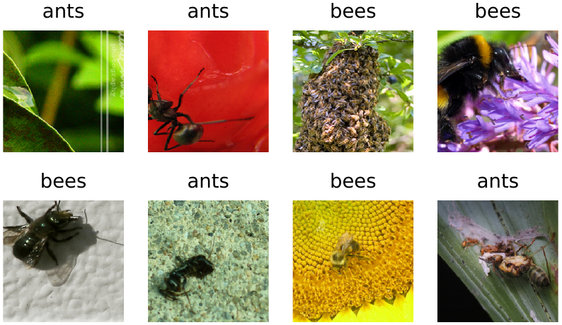
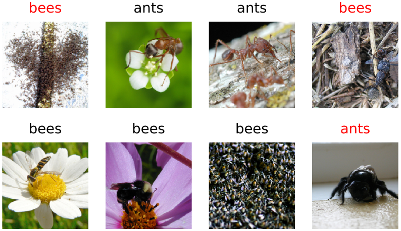

AlexNet knows a thousand categories. Suppose you need a category it does not know: a particular plant disease, defects on a production line, or your own dog versus the neighbor’s. Training a network of 61 million weights from scratch would need far more examples than you have. But you do not have to start from scratch. The early layers of AlexNet detect edges, textures and shapes that are useful for almost any photograph; the layers grow more specific to the thousand ImageNet categories as they go, and the last layer is nothing but a score for each of them. Replace that last layer with one for your own categories, and train briefly on a modest number of examples, either the new layer alone or, gently, the whole network. This is transfer learning, and it is probably the most practically useful technique in this book. We will try both versions, and, to see what the borrowed weights are worth, compare them with the same network trained from random weights.
A small dataset
We will teach AlexNet to tell ants from bees, using a small dataset from the PyTorch tutorials: a few hundred photographs, sorted into one folder per class. The code downloads and unpacks it into the data folder the first time it runs, then counts the photographs:
import os
from torchvision.datasets.utils import download_and_extract_archive
data_dir = 'data/hymenoptera_data'
if not os.path.exists(data_dir): # 47 MB, downloaded only once
url = 'https://download.pytorch.org/tutorial/hymenoptera_data.zip'
download_and_extract_archive(url, 'data')
for split in ['train', 'val']:
for name in sorted(os.listdir(f'{data_dir}/{split}')):
n = len(os.listdir(f'{data_dir}/{split}/{name}'))
print(split, name, n)train ants 124 train bees 121 val ants 70 val bees 83
This one-folder-per-class layout is the standard way to organize image data, and it is all you need to build a dataset of your own. Take a few dozen photographs of each thing you want to recognize, with a phone or from an image search, and sort them into train and val folders with one subfolder per class. The code in this chapter will work unchanged.
More data for free
With only about 120 training photographs per class, we will stretch them with data augmentation. Every time a training image is used, we take a randomly sized and positioned crop of it and mirror it half of the time. An ant is still an ant when seen slightly closer or the other way around, so each epoch the network sees new variations of the same photographs. Validation images get the plain, repeatable preparation from Chapter 15.
from torchvision import transforms
normalize = transforms.Normalize(mean=[0.485, 0.456, 0.406],
std=[0.229, 0.224, 0.225])
train_tf = transforms.Compose([
transforms.RandomResizedCrop(224), # a random part of the photo
transforms.RandomHorizontalFlip(), # mirrored half of the time
transforms.ToTensor(),
normalize,
])
val_tf = transforms.Compose([
transforms.Resize(256),
transforms.CenterCrop(224),
transforms.ToTensor(),
normalize,
])PyTorch’s ImageFolder reads the folder layout, using the subfolder names as labels, and a DataLoader serves the images in shuffled batches. The dataset comes with only two folders, so we treat its val folder as our test set, to be looked at once at the end, and carve a validation set of 50 photographs out of the training folder, as we did for Fashion-MNIST. Subset picks images from a dataset by position. We open the training folder twice, once with augmentation and once without, so that the validation photographs get the plain preparation:
from torchvision.datasets import ImageFolder
from torch.utils.data import DataLoader, Subset
torch.manual_seed(0)
train_all = ImageFolder(f'{data_dir}/train', train_tf)
plain_all = ImageFolder(f'{data_dir}/train', val_tf) # same, unaugmented
order = torch.randperm(len(train_all)).tolist()
train_data = Subset(train_all, order[50:])
val_data = Subset(plain_all, order[:50]) # 50 for validation
test_data = ImageFolder(f'{data_dir}/val', val_tf) # kept for the end
train_loader = DataLoader(train_data, batch_size=16, shuffle=True)
val_loader = DataLoader(val_data, batch_size=64)
test_loader = DataLoader(test_data, batch_size=64)
classes = train_all.classes
print(classes, len(train_data), len(val_data), len(test_data))['ants', 'bees'] 194 50 153
That leaves 194 photographs to learn from. The loader found 244 images in the training folder where our count found 245. The odd one out is a file called imageNotFound.gif, a placeholder that came along when the dataset was collected from the web, and which ImageFolder skips because GIF is not among the image formats it accepts. Real datasets are always a little dirty, so it pays to look.
Here is one batch of training images, as the network will see them (Figure 16.1):
def show(t): # undo the normalization, for display
mean = torch.tensor([0.485, 0.456, 0.406])[:, None, None]
std = torch.tensor([0.229, 0.224, 0.225])[:, None, None]
return (t * std + mean).clamp(0, 1).permute(1, 2, 0).numpy()
images, labels = next(iter(train_loader))
plt.figure(figsize=(4.6, 2.6))
for i in range(8):
plt.subplot(2, 4, i + 1)
plt.imshow(show(images[i]))
plt.title(classes[labels[i]])
plt.axis('off')
plt.show()
A new head
Since Chapter 15 our network has been a PyTorch module rather than a list of weights. A module (technically, an object of a class derived from nn.Module) is a piece of network that holds its own weights and can be called like a function. Modules contain other modules: net contains net.classifier, an nn.Sequential like the one at the end of Chapter 12, which contains net.classifier[6], the final nn.Linear layer. nn.Linear is the module version of the F.linear layers we have been writing by hand: it holds a weight matrix and a bias. net.parameters() lists the weights of every module inside net, and we can replace any of those modules by assigning a new one.
That is what we do here. We load the pretrained AlexNet and replace its last layer, the matrix multiplication that produces ImageNet scores, with a new, randomly initialized layer. Before adding the new layer we freeze all the others, by switching off their requires_grad, so that gradient descent will leave ImageNet’s weights exactly as they are:
import torch.nn as nn
from torchvision.models import alexnet, AlexNet_Weights
net = alexnet(weights=AlexNet_Weights.DEFAULT)
print(net.classifier[6])
net.requires_grad_(False) # freeze every weight...
net.classifier[6] = nn.Linear(4096, len(classes)) # ...add a new layer
net = net.to(device)
print(net.classifier[6])
print([p.shape for p in net.parameters() if p.requires_grad])Linear(in_features=4096, out_features=1000, bias=True) Linear(in_features=4096, out_features=2, bias=True) [torch.Size([2, 4096]), torch.Size([2])]
The last line lists the weights that can still learn: the new layer’s matrix and its two biases, about eight thousand numbers out of 57 million (AlexNet’s 61 million, less the four million of the ImageNet layer we just removed). Everything before that layer still carries what AlexNet learned from ImageNet. Before training, the new layer is random, so the network should do no better than a coin toss:
def evaluate(net, loader):
net.eval()
correct = 0
with torch.no_grad():
for x, y in loader:
guesses = net(x.to(device)).argmax(dim=1)
correct += (guesses == y.to(device)).sum().item()
return correct / len(loader.dataset)
print(round(evaluate(net, val_loader), 3))0.52
With 50 validation photographs, 0.52 is indeed a coin toss. This evaluate is new: the one of Chapter 12 took a list of weights and whole tensors, while this one takes a module and a data loader. Note its structure: it switches the network to eval() mode and turns off gradient tracking, two separate things that are both needed when we only want answers.
Training the new layer
Now we train. The loop is the one we have used throughout, organized by epochs over the data loader. The optimizer is SGD with momentum=0.9, which lets each step carry along nine tenths of the previous step, smoothing out the noise of small batches, as in Chapter 11. There are three details that matter:
we hand the optimizer only the parameters it should change, here
net.classifier[6].parameters();net.train()at the start of every epoch, becauseevaluateswitched the network to evaluation mode at the end of the previous one;a small learning rate, so that pretrained weights, when we do let them change, are adjusted rather than overwritten.
We keep the weights from the last epoch. It is tempting to keep the best-scoring epoch instead, but with a validation set this small the best of ten noisy scores flatters the network, and we would be choosing the weights by the very numbers we report.
def train(net, params, epochs, lr=0.001):
optimizer = torch.optim.SGD(params, lr=lr, momentum=0.9)
history = []
for epoch in range(epochs):
net.train() # dropout on
for x, y in train_loader:
x, y = x.to(device), y.to(device)
loss = nn.functional.cross_entropy(net(x), y)
optimizer.zero_grad()
loss.backward()
optimizer.step()
acc = evaluate(net, val_loader) # switches to eval()
history.append(round(acc, 3))
print('validation accuracy by epoch:')
print(history)
return history
frozen = train(net, net.classifier[6].parameters(), epochs=10)validation accuracy by epoch: [0.84, 0.82, 0.92, 0.84, 0.94, 0.84, 0.9, 0.86, 0.9, 0.86]
The printout is the validation accuracy after each epoch. After the first pass through the photographs the new layer is already right 84 percent of the time, it touches 94 percent at epoch 5, and it ends at 86. With only 50 validation images, each one is worth 2 points, so the ups and downs from epoch to epoch, between 82 and 94, are mostly noise. On our Mac each epoch took less than a second: only 8,000 weights are learning, and the gradient never has to travel back through the frozen layers.
Fine-tuning everything
The frozen layers were trained to tell apart a thousand ImageNet categories, not ants from bees. We can let them adjust too. This is called fine-tuning: start again from the pretrained weights, replace the last layer, and this time let every weight change. Because training starts from good weights and the learning rate is small, a few epochs are enough.
tuned_net = alexnet(weights=AlexNet_Weights.DEFAULT)
tuned_net.classifier[6] = nn.Linear(4096, len(classes))
tuned_net = tuned_net.to(device)
tuned = train(tuned_net, tuned_net.parameters(), epochs=10)validation accuracy by epoch: [0.72, 0.8, 0.84, 0.78, 0.84, 0.84, 0.84, 0.86, 0.82, 0.86]
Fine-tuning starts lower, at 72 percent, and also ends at 86 percent. On this small dataset, letting 57 million weights change made no clear difference: with a validation set of 50 photographs, the two runs are within noise of each other, and there is no sign that 194 photographs can improve much on what ImageNet taught the lower layers. With a larger dataset, or one that looks less like ImageNet (X-rays, say, or microscope slides), fine-tuning often wins.
Without the head start
What are the pretrained weights actually worth? The same architecture, the same data and the same training loop, but starting from random weights, as alexnet() without the weights argument gives us:
scratch_net = alexnet() # random weights
scratch_net.classifier[6] = nn.Linear(4096, len(classes))
scratch_net = scratch_net.to(device)
scratch = train(scratch_net, scratch_net.parameters(), epochs=10)validation accuracy by epoch: [0.46, 0.48, 0.46, 0.46, 0.46, 0.46, 0.46, 0.46, 0.46, 0.46]
This network learns nothing. Its validation accuracy sits at 0.46 in almost every epoch, which is what you get by calling every photograph an ant. At these settings (a learning rate chosen for fine-tuning, ten passes over 194 photographs) training 57 million weights from random starting values simply fails. That is a failure of training, not proof that random weights carry no information; the next chapter measures what they do carry.
Now that all three are trained, we look at the test set, once, for each:
results = {'last layer only': (net, frozen),
'fine-tune all': (tuned_net, tuned),
'from scratch': (scratch_net, scratch)}
for name, (model, history) in results.items():
test_acc = evaluate(model, test_loader)
print(f'{name:16} validation {history[-1]:.3f} test {test_acc:.3f}')last layer only validation 0.860 test 0.869 fine-tune all validation 0.860 test 0.882 from scratch validation 0.460 test 0.458
The test set tells the same story as validation. Training only the new last layer gives 86.9 percent on photographs the network has never seen; fine-tuning everything gives 88.2; starting from scratch gives 45.8, the fraction of ants in the test set, because it calls everything an ant. (The test set has 153 photographs, so the gap between the first two, two photographs, is well within noise.) What separates a useful classifier from a useless one here is the head start: features AlexNet learned from 1.2 million ImageNet photographs. That is why transfer learning is the first thing to try whenever you have a small dataset.
Did it already know?
Before we celebrate, one more control, and it is the one most often forgotten. We said we were teaching AlexNet something new. Is that true? Its thousand categories are listed in its weights’ description, and we can simply look for ours. If they are there, we can build a two-class network with no training at all: keep AlexNet exactly as it is, but keep only the two rows of its last layer that score those two categories.
names = AlexNet_Weights.DEFAULT.meta['categories']
ant, bee = names.index('ant'), names.index('bee')
print(ant, names[ant], bee, names[bee])
zero_shot = alexnet(weights=AlexNet_Weights.DEFAULT)
old = zero_shot.classifier[6] # the 1,000 ImageNet scores
zero_shot.classifier[6] = nn.Linear(4096, 2) # keep only two of them
with torch.no_grad():
zero_shot.classifier[6].weight.copy_(old.weight[[ant, bee]])
zero_shot.classifier[6].bias.copy_(old.bias[[ant, bee]])
zero_shot = zero_shot.to(device)
print('validation', evaluate(zero_shot, val_loader),
' test', round(evaluate(zero_shot, test_loader), 3))310 ant 309 bee validation 0.98 test 0.974
They are there: category 310 is ant and 309 is bee. And AlexNet, untouched, tells our ants from our bees 97.4 percent of the time, better than either network we trained. We replaced a last layer that already knew the answer, having learned it from more than a thousand photographs of each insect, with a random one, and then retrained it on 194. Worse, the PyTorch tutorial that supplies these photographs describes them as a small subset of ImageNet itself, so some of our “test” photographs may well be ones AlexNet was trained on.1
None of this makes the chapter’s recipe wrong; it works the same way for categories that are truly new, and you can check that with a dataset of your own. But it does mean that this dataset flatters any network that starts from ImageNet, and it is a lesson worth more than the recipe. Whenever you borrow a pretrained network, ask what it was trained on, and whether your problem, or even your test set, was part of it. A borrowed network that scores well may be remembering rather than generalizing, and the only way to know is to look.
Looking at the answers
We keep the simplest of the two good networks, the one in which only the last layer learned, and look at its answers for eight test photographs:
net.eval() # last layer only
picks = range(0, len(test_data), 19) # spread across both classes
x = torch.stack([test_data[k][0] for k in picks])
y = torch.tensor([test_data[k][1] for k in picks])
with torch.no_grad():
guesses = net(x.to(device)).argmax(dim=1).cpu()
plt.figure(figsize=(4.6, 2.6))
for i in range(8):
plt.subplot(2, 4, i + 1)
plt.imshow(show(x[i]))
color = 'black' if guesses[i] == y[i] else 'red'
plt.title(classes[guesses[i]], color=color)
plt.axis('off')
plt.show()
Five of the eight are right, including an ant standing on a white flower. The mistakes are revealing. A dark, fuzzy bee on a bare floor is called an ant, and two ants among stalks and dry plant litter are called bees. Bees in the training photographs are usually on flowers, and ants usually on soil or bark, so the network may have learned something about the setting along with the insect, and these insects are in each other’s settings. Nothing in the training data tells it which of the two we meant. This kind of shortcut learning is one of the most common ways that classifiers fail in the real world, and the only reliable defense is to look closely at the mistakes.
Saving and using the model
Saving the network works exactly as in Chapter 15:
torch.save(net.state_dict(), 'data/ants_bees.pt')To use it later, perhaps in a different program, we rebuild the same architecture, including the two-class last layer, load the weights, and switch to evaluation mode. A small predict function then prepares any image file exactly as the validation and test images were prepared and returns the most likely class and its probability:
from PIL import Image
def load_model(path):
net = alexnet()
net.classifier[6] = nn.Linear(4096, len(classes))
net.load_state_dict(torch.load(path, map_location=device))
return net.to(device).eval()
def predict(net, image_file):
image = Image.open(image_file).convert('RGB')
x = val_tf(image)[None].to(device)
with torch.no_grad():
probs = net(x).softmax(dim=1)[0]
return classes[probs.argmax()], round(probs.max().item(), 3)
model = load_model('data/ants_bees.pt')
folder = f'{data_dir}/val/bees'
photo = os.path.join(folder, sorted(os.listdir(folder))[0])
print(predict(model, photo))('bees', 1.0)That is a complete, practical image classifier: a few hundred photographs, a network borrowed from someone else’s much larger effort, and a few seconds of computing. The same recipe, with a different folder of images, will learn to recognize many things you can photograph, and with your own photographs you will be sure the network has not seen them before. The rover of Chapter 1 is this recipe exactly: three folders of camera frames, labeled left, right and forward, a borrowed network with a new three-way last layer, and a predict call for every frame the camera takes. But how much of the borrowed network’s success comes from its training, and how much from its shape? The next chapter answers that with networks whose hidden layers are never trained at all.
Notes
“This dataset is a very small subset of imagenet”: Sasank Chilamkurthy, “Transfer Learning for Computer Vision Tutorial,” PyTorch Tutorials.↩︎